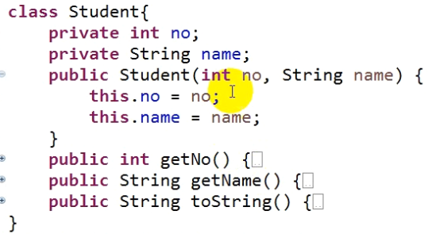

比较器：
1.Comparable:
内部比较器。
使类具备排序的能力。
2.Comparator:
外部比较器。
引用类型如果需要排序的话, 都需要实现Comparable接口(Comparable是一个内部比较器), 里面有个compareTo()抽象方法需要重写,compareTo()方法就是用来比较的, 引用类型都需要重写这个方法(自定义比较规则)才能进行排序。只有让系统知道了该引用类型是如何比较大小的(怎么区分这些引用类型的前后顺序),系统才知道怎么给这些引用类型排序。所以,如果是自定义的类,那么想给该类的对象排序时,一定要实现Comparable接口,重写compareTo()方法
看一个示例:
首先是自定义Student类没有实现Comparable接口,却想排序时:
此时运行会报错。



而下图自定义的Student类实现了Comparable接口,并重写了compareTo()方法时,可以正确运行:
需要注意的是, 重写compareTo()方法时:
排序可以选择你想排序的类的某属性进行排序。(下图是按照no成员属性进行排序)
如果希望这些对象升序排序, 那么就需要当前对象大于参数对象时,返回一个正数(任意正数皆可),当前对象小于参数对象时,返回一个负数(任意负数皆可),当前对象等于参数对象时,返回0。
如果希望对象降序排序, 那么就需要当前对象小于参数对象时,返回一个正数(任意正数皆可),当前对象大于参数对象时,返回一个负数(任意负数皆可),当前对象等于参数对象时,返回0。


运行结果如下:

其中,如果上面的compareTo()方法想简单点写,可以写成如下形式,也可以达到和上面的代码一样的升序排序效果: (int类型的属性都可以这样简化)

同时,compareTo()方法也可以按照name字段排序,也就是按照字符串排序(下图也是用的升序排序):
String类重写的compareTo()方法其实就是按照ASCII码值进行排序(注意当前类的compareTo方法和String类的compareTo方法的区分):

同样,用String类型的字段(name)进行比较也可以有简化写法, 简化一点的等价写法就是(因为String类的compareTo方法就是升序排序, 所以可以直接用String类的compareTo方法的返回值作为当前类的compareTo方法的返回值:

比较器Comparator
如果用户还希望有多种可选择的排序方式,比如按no和按name字段排序的方式都有,自己想用哪种就用哪种。而按上面的写法, Comparable的compareTo()方法只能有一种排序规则。这个时候就要用到外部比较器Comparator接口了,使用Arrays.sort(T[] a, Comparator<? super T> c)方法来调用, 其中Comparator是一个外部比较器的接口,是一个泛型接口, 还是一个函数式接口,所以我们可以用匿名类或者Lambda表达式的方式来使用它,该接口的抽象方法是int compare(T o1, T o2) 。
首先来自定义一个比较器,实现Comparator接口,按照升序排序:
同样的,在下图中, 两个红框里的内容是等价的,后面那个红框是前面那个红框的简写形式。

自定义好比较器后, 就可以用该比较器来进行排序了。如果在使用Arrays.sort()方法时指定了比较器, 此时就是使用自定义的比较器进行比较,不使用Comparable比较器; 如果不指定的话,则默认是用内部的Compareble比较器。

通过自定义比较器实现Comparator接口的方法,我们可以自定义多个比较器类, 让每个比较器按不同字段排序,就能达到上面所说的需求。
但前面说了,Comparator是一个函数式接口, 如果自定义的比较器只使用一次的话,我们可以用匿名内部类的形式来创建对象, 也可以用Lambda表达式。
所以,在这里, 使用匿名类的方法就是, 不自定义比较器, 而是在使用Arrays.sort(T[] a, Comparator<? super T> c)方法时,直接通过匿名类来实现Comparator接口,重写compare()方法,并创建好对象。

上图中的匿名内部类再简化成Lambda表达式则是:

如果一个比较器里面需要按照两个字段进行排序,如:

比较器里比较大小的代码写法一般就是如下了: (假设员工类就是Student类)
下面用的是外部比较器Comparator的匿名内部类形式

同样, 按照两个字段排序时比较大小的代码也可以进行简化, 简化后的写法如下:
两个字段进行比较的都可以这样写,都是要先把"==0"的if判断放在前面

------------------------------------------------------------------------------------------------------------------------------------------
数组：
1.存储基本数据类型 和 引用数据类型都可以；
2.长度是固定。
集合：
1.只能存储引用类型的数据,不能存储基本数据类型；
2.长度是可以变化的。
-----------------------------------------------------------------------------------------------------------------------------
集合： (所有的集合的接口和类, 都位于java.util包里)
下面是简单一点的集合树图: (集合树还可以更复杂)
虚线的框表示接口, 实线的框才是具体的类

Collection是单列存储,Map是双列存储, 单列存储只能存一项数据,而双列存储可以存两项不同的数据
List子接口扩展了父接口Collection的功能, 除了存储一列数据之外,这一列数据还有次序; 而Set子接口也扩展了父接口Collection的功能, Set存储的一列数据是无次序的, 但是它是唯一存储,里面的数据不能是重复的。ArrayList和LinkedList是List接口的实现类,可以创建对象去使用, 除了实现了接口的功能外,他们还有自己独特的功能。ArrayList和LinkedList用的容器是不一样的(一个是数组一个是链表)。而Set也有两个实现类HashSet和TreeSet。
接口之间也有些依赖关系,比如说Map接口依赖于Collection, 就说明Map的一些功能实现可能会用到Collection,比如Map的一些方法的参数用了Collection作为参数。
Iterator是一个接口迭代器, 它是用来遍历集合的。而它有一个子接口ListIterator,主要是对List进行迭代(即对List进行循环的访问或遍历)
另外,在集合里也经常用到比较器Comparable和Comparator, 集合的数据因为经常需要排序,既然是排序,自然就会用到比较器。
集合经常用到的两个工具类: Arrays和Collections(一看到Collection加了s,就应该想到它是一个工具类,一般工具类才会用复数形式), 这两个类是专门针对集合进行操作的工具类。
所以对集合的使用主要有以下四块,一块是集合的接口和实现类; 一块是集合的迭代器接口,对集合进行迭代操作的; 一块是比较器Comparable和Comparator,对集合进行排序的; 一块是对集合进行操作的工具类Arrays和Collections。
集合主要分成下面的Collection和Map两块来讲:

-----------------------------------------------------------------------------------------------------------------------------
先研究Collection这一块:

Collection:是一个接口。存储的数据无序，但数据可以重复存储。
|
List: 是Collection的子接口 可以重复存储数据，但存储的数据有序。
|
List的实现类:
ArrayList : 底层结构是数组
Vector : 底层结构是数组。Vector还有一个子类Stack类,是对栈进行操作的
LinkedList: 底层是链表
(集合的使用: 因为使用的是一个个实现类,所以肯定是创建对象,然后通过调用方法来使用集合)
-----------------------------------------------------------------------------------------------------------------------------
Collection接口是一个泛型接口。
在实际编程时, 想要只使用Collection接口中的方法, 而不使用到其子接口和实现类中的方法, 就要用到多态的思维, 和父类引用子类对象一样, 接口也可以引用其实现类的对象(其实接口和其实现类也是父子关系,和接口和其子接口的父子关系一样,在使用时并没有任何的区别)

使用Collection接口的具体方法需要注意: 存储的数据无序，但数据可以重复存储。
Collection方法详解:
add(某元素): 往集合里面存数据(某元素), 储存成功返回true, 失败返回false
isEmpty(): 判断当前集合是否是空的(是否有元素),是空的,返回true, 不是空的返回false
size()方法 : 返回当前集合中元素的个数
addAll(某集合): 往当前集合里添加某集合里的所有元素,添加成功返回true,否则返回false。
添加的集合只能是Collection接口引用其实现类对象时的给定的具体类型参数的类型及其子类型。
需要注意的是addAll()方法的参数Collection的泛型通配符为什么是<? extends String>,是因为定义的集合对象c时的实际类型参数是String。

使用如下:


remove(某元素) : 删除当前集合中的某元素,如果删除之后集合发生改变,返回true, 如果删除之后集合没有改变,返回false
removeAll(某集合): 删除当前集合中的某集合中包含的所有元素。如果当前集合发生了改变,返回true,否则返回false。
removeIf(某条件) : 按照指定的某条件删除当前集合的元素。如果当前集合发生了改变,返回true,否则返回false。
具体函数定义是: 
其中Predicate是一个泛型接口,是一个函数式接口,该接口是一个过滤器。该接口的抽象方法是boolean test(T t); t就是当前集合的元素, 对这个元素进行一些判断,判断是否符合某条件, 返回true表示符合某条件的。
而在removeIf(某条件)方法中,test(T t)如果返回true即表示该元素符合某条件, 符合某条件的结果都会被remove掉。
需要注意的是这里的Predicate接口的泛型通配符为什么是<? super String>,是因为定义的集合对象c的实际类型参数是String。使用如下:

或者Lambda表达式的形式:

contains(元素): 判断元素在当前集合中是否存在。存在返回true,否则返回false。
containsAll(某集合): 判断当前集合是否包含(存在)某集合,包含就返回true,否则返回false。
clear(): 清除集合中的所有元素。无返回值(void)
toArray(): toArray( )不带参的话就是把当前集合转换成一个Object类型的数组, 其实就是把当前集合中的元素存到一个Object类型的数组里,Object类型可以接纳任何数据类型的集合。
toArray(数组) : toArray( )带参的话就是把当前集合中的元素存到一个指定类型的数组里。
使用举例:
下面的例子的前提条件是集合对象c中此时恰有4个元素。
红框中的三种写法是等价的,蓝框中的两种写法是等价的。 而新建一个匿名String(或Object)数组中,如果c中元素个数大于新建数组时定义的数组长度,则会对数组进行自动扩容, 而如果定义的数组的长度大于c中元素的个数,则多余的数组空位会用默认值填充(String类型的默认值是null)。

Arrays类要有一个把数组转换为集合的方法 Arrays.asList(arr) , 转换完后, 就可以当成集合使用了。
但需要注意的是数组转换成的集合对象的类型是Arrays类的静态内部类ArrayList, 并不是List接口的直接实现类ArrayList, 两者是不一样的容器, Arrays类的静态内部类ArrayList会比List接口的直接实现类ArrayList缺少很多的方法, 比如说不支持添加、删除等操作。但Arrays类的静态内部类ArrayList本质上还是List的一个间接实现类,只是缺少了一些功能(Arrays类的静态内部类ArrayList并不是直接实现List接口,而是继承了AbstractList类, 而AbstractList类是List的实现类。所以Arrays类的静态内部类ArrayList是List的间接实现类。 奇怪的是List接口的直接实现类ArrayList直接实现了List接口, 并且还继承了AbstractList类, 这是啥操作???)

------------------------------------------------------------------------------------------------------------------------------------------
List接口的方法:

List里的存储的数据是有次序的, 元素可以重复
List 会按照元素添加的顺序来分配位置索引, 索引从0开始,每个元素分配一个位置索引。
add() 和addAll():
add()和addAll()方法相比于Collection, 都新增了一个重载,如下图中红框的两个:
add(索引,元素)方法的是在索引处添加元素, 则原先在该索引处的元素以及该索引之后的元素都向后挪动一个位置。
addAll(索引,某集合)方法的是在索引处添加某集合的所有元素, 然后原先在该索引处的元素以及该索引之后的元素都向后移动相应个位置(挪动的位置数等于某集合的元素个数)
(注意: 上面所说的"向后挪动x个位置"是相对于ArrayList来说的,对于LinkedList则没有向后挪动的说法,但LinkedList也有这四个重载方法)

get(索引): 根据索引来获得索引对应位置的元素
set(索引,某元素): 用某元素替换掉该索引所对应的元素。
indexOf(元素) : 查找该元素在当前集合中第一次出现的位置索引。没有此元素返回-1
lastIndexOf(元素) : 查找该元素在当前集合中最后一次出现的位置索引。没有此元素返回-1
subList(起始索引, 终止索引) : 返回一个子集合:从起始索引到终止索引的([起始索引, 终止索引))。
sort(比较器): 按照自定义的比较规则对集合进行排序。比较器可以是Comparator和Comparable比较器。
下图是Comparator比较器(从重写抽象方法时传了两个参数可看出是Comparator)

如果不指定比较器,则使用默认的Comparable比较器来进行排序, 因为list里面的元素是String类型,String类本身就实现了Comparable接口, String类实现的排序规则是按自然顺序(ASCII码的大小)进行排序。按默认的Comparable比较器排序的使用方法如下:

-----------------------------------------------------------------------------------------------------------------------------
集合的遍历方式:
下面的六种遍历方法,只要Collection类支持,则List类一定支持(毕竟Collection类是集合里所有类的父类)
(1)普通for循环Collection是不支持的,因为Collection是无序的, 没有下标位置索引, 而List则是支持的。（ArrayList支持，LinkedList也支持吗？）
List的普通for循环遍历方法如下:

(2)增强for循环不需要知道每个元素的下标就把整个集合都遍历一遍, 所以既支持Collection也支持List。
List的增强for循环遍历方法如下:

(3)集合的forEach方法遍历集合元素。(forEach方法很多地方都有,Collection、Arrays、String、Map)

(4)Collection里面有个Collection.stream()方法会返回一个流, 这个流里面提供了一些方法, 是用来对集合里的元素进行统计性操作的,比如求最大值、最小值、平均值等, 就像Array.stream()一样。使用流的forEach()方法, 也可以达到遍历集合的目的(这里是集合对象调用的stream流, 而Array.stream()则是数组调用的Stream流, 因为返回的都是流,所以里面的方法也一样)

(5)Iterator接口就是设计用来遍历集合的,它是依赖于底层的容器的,不同的容器对该接口的实现是不同的(ArrayList底层的容器是数组)。因为Iterator是接口, 不能创建对象,但是可以通过集合的对象.iterator() 这种方式来获得一个"Iterator接口关于集合底层容器的实现类的对象"。

刚创建完对象时,当前指针是位于集合的第一个元素的前面的,对象第一次调用.next()方法后,指针位于第一个元素之后、第二个元素之前。每次调用.next()方法后指针的位置如下图所示(next就是下一个元素的意思, 调用next()方法就是返回指针后面那个元素的值, 接下来指针再向后移一位):

所以迭代器可以通过hasNext()方法来循环遍历集合。hasNext()方法是是否存在下一个元素, 也就是说指针后面还有没有元素,有就返回true,否则false。(需要注意的是每调用一次next()都会使当前指针后移一个位置，但 hasNext()方法不会)

(6)迭代器里面还有一个方法, 类似于流的forEach()方法, 也可用来遍历集合

需要注意的是用System.out.println(list)这种方法不叫遍历,只是一种展示,展示了整个集合。如下,当你里面传的是一个对象是, 实际调用的是该对象的toString方法,因为List类重写过该方法,会展示出列表里所有元素, 而有的类可能直接展示的就是对象的地址了。

-----------------------------------------------------------------------------------------------------------------------------
两个迭代器:
迭代器Iterator接口里面就四个方法。

Iterator是针对于Collection的,而Iterator还有一个子接口ListIterator, 专门为List设计的,只针对于List。
ListIterator里面的方法如下,有一些是继承自Iterator接口的。

add(元素)方法是往集合里当前指针位置处添加元素。 (添加的元素放在当前指针的后面那个元素的所在的位置, 然后指针后面的所有元素依次向后移动)
set(元素)方法是修改当前指针前面的那个元素
remove()方法删除当前指针的前面的那个元素,这是从Iterator迭代器继承来的方法
previous()方法是返回当前指针的上个元素。(需要注意的是每调用一次previous()都会使当前指针前移一个位置)
hasPrevious()方法是判断当前指针是否存在上个元素。
nextIndex()方法获得当前指针后面那个元素的索引。
previousIndex()方法获得当前指针前面那个元素的索引。
(需要注意的是调用hasPrevious()或hasIndex()或nextIndex()或previousIndex()都不会使当前指针移动,只有next()和previous()才会移动指针)
previous()和hasPrevious()方法结合的话支持向前遍历(迭代), 但前提是此时的当前指针需要指在最后一个元素的后面

遍历时对元素进行增删:
集合遍历时添加/删除(add/remove, 会造成modCount++的操作)是一个很容易出错的操作(修改(set)不会造成modCount++)，即使有时候代码不出现异常，但执行逻辑也会出现问题。关于这个问题，阿里巴巴 Java 开发手册里也有所提及。这里引用并修改一下：
不要在 foreach 循环里使用集合的remove/add方法进行元素的 remove/add 操作。remove 元素请使用 Iterator(或ListIterator也继承了该方法)的remove方法，add请使用ListIterator的add方法(因为Iterator里没有add方法, 只有ListIterator里有)。如果并发操作，需要对 Iterator 对象加锁。
正确写法如下:
List<String> a = new ArrayList<>();
a.add("1");
a.add("2");
Iterator<String> it = a.iterator();
while (it.hasNext()) {
String temp = it.next();
if("1".equals(temp)){
it.remove();
}
}
错误示例的相关代码（稍作修改）如下：
List<String> a = new ArrayList<String>();
a.add("1");
a.add("2");
for (String temp : a) {
System.out.println(temp);
if("1".equals(temp)){
a.remove(temp);
}
}
}
相信有些朋友应该看过这个，并且也执行过上面的程序。上面的程序执行起来虽不会出现异常，但代码执行逻辑上却有问题，只不过这个问题隐藏的比较深。我们把 temp 变量打印出来，会发现只打印了数字1，2没打印出来。初看这个执行结果确实很让人诧异，不明原因。如果死抠上面的代码，我们很难找出原因，此时需要稍微转换一下 思路。我们都知道 Java 中的 foreach 是个语法糖，编译成字节码后会被转成用迭代器遍历的方式。所以我们可以把上面的代码转换一下，等价于下面形式：
List<String> a = new ArrayList<>();
a.add("1");
a.add("2");
Iterator<String> it = a.iterator();
while (it.hasNext()) {
String temp = it.next();
System.out.println("temp: " + temp);
if("1".equals(temp)){
a.remove(temp);
}
}
这个时候，我们再去分析一下 ArrayList 的迭代器源码就能找出原因。
private class Itr implements Iterator<E> {
int cursor; // index of next element to return
int lastRet = -1; // index of last element returned; -1 if no such
int expectedModCount = modCount;
public boolean hasNext() {
return cursor != size;
}
@SuppressWarnings("unchecked")
public E next() {
// 并发修改检测，检测不通过则抛出异常
checkForComodification();
int i = cursor;
if (i >= size)
throw new NoSuchElementException();
Object[] elementData = ArrayList.this.elementData;
if (i >= elementData.length)
throw new ConcurrentModificationException();
cursor = i + 1;
return (E) elementData[lastRet = i];
}
final void checkForComodification() {
if (modCount != expectedModCount)
throw new ConcurrentModificationException();
}
// 省略不相关的代码
}
我们一步一步执行一下上面的代码，第一次进入 while 循环时，一切正常，元素 1 也被删除了。但删除元素 1 后，就无法再进入 while 循环，此时 it.hasNext() 为 false。原因是删除元素 1 后，元素计数器 size = 1，而迭代器中的 cursor 也等于 1，从而导致 it.hasNext() 返回false。归根结底，上面的代码段没抛异常的原因是，循环提前结束，导致 next 方法没有机会抛异常。但是, 如果集合里的元素大于2, 循环里用集合的方法remove元素, 那肯定就不是安全结束循环了, 而是会抛异常了。
List<String> a = new ArrayList<>();
a.add("1");
a.add("2");
a.add("3");
Iterator<String> it = a.iterator();
while (it.hasNext()) {
String temp = it.next();
System.out.println("temp: " + temp);
if("1".equals(temp)){
a.remove(temp);
}
}
使⽤ Iterator 提供的 remove ⽅法(ListIterator里的add/set方法同理)，可以修改到expectedModCount 的值。所以，才不会再抛出 ConcurrentModificationException 异常。
-----------------------------------------------------------------------------------------------------------------------------
集合的实现类的比较:
实现类区别：
ArrayList:
是 jdk1.2版本出现的。底层的数据结构是数组。数组的长度是固定的, 而集合的长度是可变的, 而如果集合里的元素个数超过了数组的长度,则会新建一个长度更长的数组, 将原来数组里的元素复制到新数组里, 从而实现数组的扩容, 让集合的长度可变。
用无参构造新建一个ArrayList对象就是创建了一个长度为0的数组(即数组为空数组(不是null),即"{}")

当添加第一个元素时, 数组为空装不下这个元素了, 这个时候要进行扩容, 新建一个数组(默认大小为10) ,并把该元素存进去,新的数组作为该列表对象底层的数组。当添加的元素个数大于10后,再次扩容,扩容的规则是 新的容量 = 原来的容量 + (原来的容量/2)。也就是新的容量 = 原来的容量*1.5。数组的容量上限是Integer.MAX_VALUE
也可以在新建ArrayList对象时就用构造器参数指定数组容量的大小(可以对自己的数据量有个预估), 从而避免频繁的扩容。

ArrayList是线程非安全的
Vector:
是jdk1.0版本出现的。底层数据结构也是数组。
ArrayList是对Vector类的优化, Vector里面的方法的名字都比较长,而ArrayList则进行了优化,方法名较短。
Vector在数组容量不足进行扩容时, 扩容的规则是 新的容量 = 原来的容量 + 原来的容量。也即是新的容量 = 原来的容量*2
ArrayList是1.5倍扩容, Vector是2倍扩容
同样是数组作为容器的话, 选择ArrayList, 因为Vector的性能比ArrayList低。
Vector是线程安全的,而ArrayList则是线程非安全的。但即使Vector是线程安全的也不用它了,因为性能低
Stack :
Vector类还有一个子类Stack,是对栈进行操作的, 但因为性能低, 也不怎么用了, Java堆栈 Stack 类已经过时，Java官方推荐使用 Deque 替代 Stack 使用(Deque的实现类有ArrayDeque和LinkedList)。
所以,底层数据结构用数组的, 我们一般都用ArrayList
LinkedList:
底层数据结构是链表,而且是双向链表
存储的元素是Node(节点)
单向链表的节点分为两个区域,一个是该节点的值域(数据域), 一个是节点的链域(指向下一个节点的地址)

双向链表的节点分为三个域,一个是前驱(前一个元素的地址), 一个是值域,还有一个是后继(后一个元素的地址)

链表中的方法大部分跟ArrayList类似, 还有一些不一样的方法, 大部分是直接跟first(头节点)和last(尾节点)有关。然后可以发现,即使LinkedList是双链表,还是保存了从Collection继承而来的同名方法,如下面的add(元素)方法, 从"add(元素)等价于addLast(元素)"可以看出, 在使用LinkedList时, 也可以把它当做普通的单链表使用。(因为addList就相当于在链表尾插入)

-----------------------------------------------------------------------------------------------------------------------------
引用和对象的区别:
编译时检查的是赋值运算符左边的部分。运行时执行的是赋值运算符右边的部分,包括生成对象、变量以及给对象、变量等分配空间
赋值运算符左边和右边的类型不一定相同。
如 Object obj = new Student();
左边的obj是Object类型的, 而右边是day10.Student类型的
赋值运算符左边是编译期的类型,赋值运算符右边是运行期的类型,是真正产生的对象的类型。
赋值运算符左边是引用名称的类型,右边是对象的类型。他俩可以不一样。
注意引用和对象的区别:
引用说到底里面就是个地址值(存储在栈里, 指向堆里的对象, 作用跟c语言里的指针一模一样), 而对象则是存储在堆里的真正的对象, 占用堆空间的。
对象只会在新建对象时出现在代码语句里,其他时候都不会出现。如Object obj = new Student(); 赋值运算符右边的就是一个真正的对象(当然除了new也还有其他创建对象的方法), 而赋值运算符左边的则是引用,只是个地址。如果再来一句代码, Object obj1 = obj; 则此时赋值运算符两边都是引用,只是将obj里面的地址赋给了另一个变量obj1, 只是一个地址在传来传去, 已经跟具体的对象无关了。
比如LinkedList类里在双链表的末尾插入元素的操作如下:
last和first就是记录的就是双链表的首节点和尾节点。


-----------------------------------------------------------------------------------------------------------------------------
数组的优劣：
遍历 和 随机访问 效率高。(因为数组的存储空间是连续的)
删除 和 插入一个元素 慢。(需要移动其他元素,并且数组空间不够的话还需要扩容)
链表的优劣：
随机访问 和 遍历 效率较低。
删除 和 插入元素 效率高。
今后选择集合类时:
如果元素需要频繁的遍历和访问,则选择底层数据结构是数组的ArrayList,
如果元素需要频繁的删除和插入, 则选择底层数据结构是链表的LinkedList。
List这一块主要用这两个类就行了
什么时候使用一维数组,什么时候使用ArrayList集合:
数组长度固定，而ArrayList未限定长度，且支持的功能更多，ArrayList底层实际上也是使用数组实现,但会自动扩容。
不需要复杂功能和确定长度的情况下，使用数组效率更高，
如果需要复杂功能,数组长度不确定, 通常情况建议使用ArrayList。
那多维数组有什么用呢?
多维数组的所有维度都是同一种类型的数据,而如果想要每个维度的元素的数据类型不一样,则需要定义成类,每个维度的元素类型定义成来类中的一个属性,定义成类后再按上两条规则考虑该类是用一维数组来实现还是用ArrayList来实现。(其实多维数组主要和 类 做区分,也可以说多维数组是面向过程的思想,类是面向对象的思想)
-----------------------------------------------------------------------------------------------------------------------------
注意泛型只能是引用类型, 所以要存一些基本数据类型时, 其实都会自动装箱成其对应的包装类, 变成引用类型。这也是包装类存在的重要意义

-----------------------------------------------------------------------------------------------------------------------------
List集合应用举例:

代码:

-----------------------------------------------------------------------------------------------------------------------------
Set接口
Set这一块的关系结构如下:

Set接口：Set是集。 唯一存储数据(不能存在重复元素)，存储的数据无序。
|->Set的实现类有: HashSet -> HashSet的子类有: LinkedHashSet
SortedSet 接口: Set的子接口。用于排序的
|
NavigableSet 接口: SortedSet的子接口。用于一些精确操作的
|
实现类 TreeSet
因为HashSet直接实现了Set接口, 所以HashSet里面的数据肯定是无序的,
而TreeSet是实现了NavigableSet接口, 也就是说它间接实现了SortedSet的功能, 也就是说TreeSet是排了序的
------------------------------------------------------------------------------------------------------------------------------------
HashSet:
底层数据结构是哈希表。
哈希表: 将一组关键字映射到地址集上。(hash表本身是一个数组,如果没有hash冲突的话)
哈希表是通过哈希算法算出某元素对应的一个哈希值,哈希值即为哈希表中该元素的位置索引,该元素就存储在该位置。hash表中的每个位置都可以叫做一个桶。而一般来说,hash算法就定义在hashCode()方法里面(所以说为什么会每自定义一个类都建议重写Object类中的hashCode()方法) ,所以我们也可以在hashCode()方法里自定义 hash算法。
hash算法: hash算法也就是hash散列的规则, 散列的规则可以自定义, 有了hash散列的规则,自然也就会有hash冲突。
hash冲突的一般解决方法(在java里): 如果出现了hash冲突, 首先调用该对象所对应的类里的equals()方法判断和hash表里该位置的对象是否为同一对象:
(1)若为同一对象, 则直接舍弃该重复对象, 不将该元素(对象)重复存入hash表, 这就保证了数据的唯一性。
(2)若不为同一对象,则使用拉链法(链地址法)解决冲突。(这里解决冲突的办法也是整个java解决hash冲突的办法?)
也就是说hash表中的某位置索引如果出现了hash冲突, 则会采用链表的方式存储(链式存储)冲突的元素, 但如果hash表的某位置索引的节点数大于或等于8(链表的链长大于或等于8), 则再存到该位置索引的元素改为用二叉树(该二叉树是红黑树)类型存储(前面的元素还是按照链表存储的方式不变,第8个开始用二叉树类型存储。错。前面的按照链表存储的元素也会转移到红黑树中，原先的链表会直接删除)。链表长度过长时使用二叉树存储是因为二叉树查找效率要比链表高(但是存储空间也比单链表占的大), 以免因为链表过长影响查找结点的效率。所以hash表的存储方式是: 数组+链表或二叉树。 (这里所说的规则是在jdk8.0才出现的)
注意: 使用hash算法时只有在hash冲突的时候才会调equals()方法,否则是不会调的。(这里解决hash冲突的办法也说明了为什么每自定义一个类都建议重写Object类中的hashCode()方法和equals()方法)
从上面可以看出为什么说HashSet里的数据是无序的,这也是由底层的Hash表的存储方式决定的, 元素在添加(add())时的位置不是按位置索引的次序递增的,而是完全由hash算法散列出来的, 散列决定了这些元素的对应的位置不是一个个位置索引递增,而是散乱的存储到hash表中的某位置,所以注定了HashSet是无序的。
所以hashSet新增存储数据时大概是以下过程：
先调用 hashCode() 计算出 哈希值，
哈希值不冲突，可以把对象存进去；
但是，hashCode() 计算出的 值冲突了，
那么 调用equals()判断 是否为同一个对象，
是同一个（true）,不允许存入，还是采取旧值，
否则 (false) 可以存入 ，链表 或 红黑树 方式存储。
在下面这个情形中, set集合里只会有三个元素, 因为最后一个添加的字符串"ab"和添加的第一个字符串"ab"属于同一对象, 所以最后一个字符串会添加失败。

但是下图的情形中, 自定义了一个类student, 如果没有自定义hashCode()和equals()方法, 那么下面的语句执行完后, stus集合中还是会有三个元素, 因为stu1和stu2根本不是同一个对象。

上图的代码如果在Student类里加上重写后的equals()方法和hashCode()方法,如下, 就会使代码执行完时stus集合里只有两个元素。

上图这段代码也可以用系统自动生成(只选no和name属性)的equals()方法和hashCode()方法代替,如下。系统自动生成的equals方法只是比上图的更严谨一些, 而系统自动生成的hashCode代码相比于上图的代码的优势则是hash冲突会更少。

为什么上图会比上上图冲突更少?
举个例子: 如果上上图中字节写的代码的no 和name的值如下,,虽然他们明显不是同一个值,但他们加在一起组成的hash值还是会出现冲突。

但如果是上图的系统自动生成的代码, 也就是相当于让其中一个属性乘以了一个常量, 如下(虽然实际比这还稍微复杂点, 但原理是这样)。这样的话,同样的属性值, 产生冲突的概率就更小了,程序的执行的效率也更高了(不用多次调动equals方法)。

HashSet题目示例:
题目:

代码:

------------------------------------------------------------------------------------------------------------------------------------
注意:
观察HashSet生成对象时的构造器:

若点击该构造器进入HashSet的源码,可以发现底层调用的构造器的代码为:

所以说其实Set就是Map。HashSet底层就是使用的HashMap。
然后可以发现HashSet的一系列方法如add()也是调用的HashMap的方法


因为HashMap是双列存储, 所以在存储HashSet的元素时,第一列(Key)存HashSet的元素值,而第二列(Value)则直接全部用了一个常量对象引用 PRESENT 来统一存储。

下面是HashMap里的一些源码的解释:
在HashMap里初始的集合容量是16。
初始的集合最大容量是1*2^30。而实际最大的上限在还需要扩容的时候能达到Integer.MAX_VALUE

默认的加载因子( 装填因子)是0.75。加载因子也就是以前学hash表的时候的装填因子α。也就是数组(注意只是数组,和冲突后再链接的链表无关)已被存储的容量达到总容量的多少时开始扩容,这里的意思是超过总容量的75%即开始扩容。

二叉树的阈值(临界值)是8, 也就是hash表的某个位置索引的元素的链表长度大于或等于8,则再存到该位置索引的元素改为用二叉树类型进行存储(前面的元素还是按照链表存储的方式不变,第8个开始用二叉树类型存储)

视频 里有对HashSet源码的讲解。
里有对HashSet源码的讲解。
里有对HashSet源码的讲解。 观察HashSet的源码(其实也就是HashMap的源码)可以发现, HashSet和HashMap扩容时是2倍扩容
------------------------------------------------------------------------------------------------------------------------------------
LinkedHashSet：
底层的数据结构是链表和哈希表。链表用来维护次序(指先后顺序,并不是对里面的元素按照某种排序规则重新排了序),哈希表则用来存储元素。
HashSet是完全无序的,而LinkedHashSet则是按照链表来维护次序, 即按照元素添加的顺序来维护。
其他功能就与HashSet差不多,只是多了一个元素添加(add())时的顺序。
也就是说, 只要LinkedHashSet按照和HashSet同样的遍历方式进行遍历, 遍历出来的结果就是有序的, 而HashSet遍历出来是无序的。TreeSet同理(当然LinkedHashMap和TreeMap也同理)
SortedSet :
SortedSet的集合是有序的
SortedSet的一些方法:

first() : 返回集合中的第一个元素 (排完序后的)
last() : 返回集合中的最后一个元素 (排完序后的)
subSet(startElement, endElement) : 从集合中截取一个子集, 但参数不是起始位置索引到终止位置索引, 而是截取的起始元素到终止元素。参数是两个具体的元素,也是左开右闭,不包括终止元素。(为什么不能用索引来截取子集? 因为SortedSet虽然有序,但依然和Set一样, 是没有索引的(比如像树这样存储的,元素排完序其索引也不是按次序递增的)。)
示例如下:

TreeSet:
底层数据结构是 ：红黑树
TreeSet也能够按照添加元素的顺序进⾏遍历，排序的⽅式有⾃然排序和定制排序。
TreeSet会按照顺序对数据进行排序：默认情况下是按自然顺序(字典顺序)进行排序,用已实现的Comparable接口的排序方法(如果是自定义的类记得实现Comparable接口)。也可以用Comparator来自定义排序规则。
如果想要集合唯一且元素自定义排序规则排好序, 那么也只能选择TreeSet, 其他类型做不多。
TreeSet存储时是按照: 左子树上的节点 < 根节点 < 右子树上的结点 这样的规则来存储的。
TreeSet遍历时是按照中序遍历来遍历整个二叉树的
示例如下：

相对比较来说, TreeSet要比HashSet的效率低很多, 但是好处是TreeSet里面的元素已经是有序的了, 当然这种有序是真正的元素有序, 是区别于LinkedHashSet的有序的, LinkedHashSet的有序是按照元素添加(add())时的次序记录先后次序,并不是真正的里面的元素排好了序。
观察TreeSet的构造器可以发现, 构造器的参数可以是Comparator的对象, 所以可以用匿名内部类或者Lambda表达式来指定一个自定义的排序规则。

自定义一个排序规则按照降序排序 :

需要注意的是, 因为HashSet里面的元素是无序的, 所以需要按照hashCode()和equals()来判断是否为同一元素, 以使集合里元素唯一。而TreeSet则不同, 因为TreeSet是有序的, 而有排序规则的存在, 所以只要实现的Comparable接口的compareTo()方法返回0,则认为两元素是相等的, 也即是认为两元素是同一元素, 又因为Set不能有元素重复,故只会存储一份元素, 存储第二份元素的时候将会被拒绝。也就是说TreeSet不是通过元素的hashCode()和equals()方法来判断是否是同一元素的(因为TreeSet不是用hash散列的方式存储数据的)。如下面的例子:

上面的例子中如果是实现了自定义比较器Comparator的compare()方法返回0,也是一样的,只会存储其中一份,不会重复存储。如下:

在上上图中, 如果不希望某个属性相等即判断为同一元素, 则代码可以以下面这种形式来写,来避免单一属性引起的两对象视为同一元素。(如果有多个属性, 则可以在下面的if语句中再嵌套if语句来判断更多的属性)

----------------------------------------------------------------------------------------------------------------------
NavigableSet :
提供了最接近匹配原则的检索元素的方式。
NavigableSet最大的特点是它不仅有序而且可以逆序输出。(要排序的话如果是自定义的类记得实现Comparable接口)
方法:

floor(参数元素) : 返回集合中小于等于参数元素的最大元素
ceiling(参数元素) : 返回集合中大于等于参数元素的最小元素
descendingSet() : 返回一个集合(对象),返回的集合是原集合的降序。(原集合默认是升序排序)
descendingIterator() : 返回一个迭代器(对象),返回的迭代器是原集合的降序。
descendingSet() 和 descendingIterator()的区别就是一个返回的是集合对象,一个返回的是迭代器对象
pollFirst() : 移除集合里的第一个元素
pollLast() : 移除集合里的最后一个元素
方法使用示例:

该如果选择Set的实现类?
如果要重复存储, 选List, 唯一存储, 选Set。
而在Set里,
如果只需要唯一存储, 不需要次序 , 则选择HashSet ,因为HashSet的效率比较高;
而如果有次序上的要求,则要看是哪种次序要求:
如果需要用到元素添加时的次序(并且只需要添加的顺序), 则选择LinkedHashSet(因为比起TreeSet要节省一些空间);
而如果需要的是集合里的元素有序或者需要自定义排序规则, 则选择TreeSet
在Set的这三个实现类里,效率最高的是HashSet, 其次是LinkedHashSet, 最低的是TreeSet, 因为顺序的维护会有一些系统的消耗。
----------------------------------------------------------------------------------------------------------------------------------------
Collections：集合工具类
(Collection加了个s ,那就表示是一个工具类,就像Arrays工具类, 工具类的特点就是里面的所有属性和方法等都是静态的)
常用方法:

addAll(某集合, 可变参数个元素): 向某个集合里添加若干个元素
max(某集合): 查找某集合中的最大值
min(某集合): 查找某集合中的最小值
frequency(某集合,某元素): 返回某元素在某集合中出现的次数(频率)。
(注意以下方法适用的集合只是List的及其实现类,不能是set之类的集合)
sort(List集合): 给List集合进行升序排序,不指定比较器就用的是默认的Comparable比较器
sort(List集合, 比较器): 按照指定的比较器排序规则给List集合进行排序。
binarySearch(List集合, 某元素): 在List集合中二分查找某元素,返回该元素的位置索引, 如果不存在该元素则返回"-list.size - 1"。(注意,和数组一样,List集合的binarySearch的前提也是已经升序排好序)
reverse(List集合): 反转List集合,反转后的结果直接覆盖原来的List集合值。
shuffle(List集合): 对List集合中的元素进行一次洗牌(即打乱所有元素的次序,使元素的次序变得杂乱),洗牌后的结果直接覆盖原List集合。
fill(List集合,某元素): 用某元素的值替换(填充)掉某集合中的所有元素。
所有方法使用示例如下:

看一个Collections工具类的应用:

具体编程如下:

----------------------------------------------------------------------------------------------------------------------------------------
Queue: (队列)

Queue:接口：队列 线性表 先进先出
|-PriorityQueue类: Queue的实现类.是一个优先队列,即按照一定的优先级对队列中的元素进行排序,排
| 序规则是根据Comparable或Comparator来的。
Deque 接口：Queue的子接口。是一个双端队列,即队头队尾都可以分别进行一些操作,比如队头队尾都
| 可以实现进队和出队。意味着实现该接口的类既可以模拟队列，也可以模拟栈
|
ArrayDeque: Deque的实现类。底层数据结构是属于数组的
LinkedList: Deque的实现类。底层数据结构是属于链表的(LinkedList既是List的实现类,也是Deque的实
现类。也就意味着LinkedList既可以实现列表的功能, 也可以实现队列的功能,也可以实现栈的功能)
有一点需要注意, 使用队列时不要使用null作为队列的元素值, 否则会引发空指针异常。(只有LinkedList队列允许元素值为null,这是为了与之前的代码兼容,所以就留下来了,但是如果要对队列操作, 还是要尽量避免使用null)
----------------------------------------------------------------------------------------------------------------------------------------------------------------------------
Queue:

add和offer都是在队尾添加元素, remove和poll都是在队头删除元素, element和peek都是获得列表头的元素(不会删除该元素)。但是由于add、remove和element操作失败时会引发异常,所以一般用offer、poll、peek会更好一些。比如add添加元素,添加失败不是返回false而是引发异常, 而offer则是直接返回false,而不引发异常。
add(某元素)和Collection接口的add方法一样。Collection类的remove(某元素)方法需要传入参数"某元素", 而在Queue里,remove()则不需要传入任何元素, 因为是队列,所以只能删除队尾的元素。element()也很简单,获得列表(队列)头的元素,但他们三个获取元素失败即会引发异常。
而offer(某元素)时,添加元素失败则返回false, poll(某元素)时,删除元素失败则返回false, peek()获得列表(队列)头的元素失败时, 会返回null。
以上这些方法的应用举例:

出队的一般写法:

----------------------------------------------------------------------------------------------------------------------------------------------------------------------------
PriorityQueue:

PriorityQueue队列会按照优先级排序,PriorityQueue的排序规则默认是按照实现的Comparable接口的排序方式来排序, 当然也可以用自定义的Comparator的排序规则来排序。
所以使用PriorityQueue类时需要注意, 如果想给队列排序, 使用这个类时没有问题的, 但是如果不想给队列排序, 则不要使用它, 因为这是个优先队列, 破坏了队列先进先出的规则。
PriorityQueue应用举例:
需要注意的是: 直接用System.out.println(q) 的方式或遍历队列q的方式都不能保证队列元素打印的顺序是优先队列(PriorityQueue)排完序后的队列元素的顺序(如下图红框所示),而只有用出队的方式打印优先队列q时, 才是q排完序后的结果(如下图绿框所示)。

----------------------------------------------------------------------------------------------------------------------------------------------------------------------------
Deque:

上图表和Queue一样, 区分了两组(add、remove、element)和(offer、poll、peek)的区别。同样建议用(offer、poll、peek)这一组方法, 更优。上面的first和last分别是指队首和队尾。需要注意的是Deque接口多了栈的方法。
也就是说Deque接口还可以模拟栈(双端队列模拟栈是很简单的, 只需要只使用一端用来插入和删除元素即可,Deque默认是用的双端队列的first这一端(也就是队首)来入栈出栈操作的,也即是说Deque里的push()等价于offerFirst(),pop()等价于 pollFirst())
Deque接口不仅有offerFirst(某元素)方法、offerLast(某元素)方法, 还有继承自Queue的offer(某元素)方法, 对于Deque来说,Deque的实现类的offer(某元素)方法等价于offerLast(某元素)方法。同理还有add()等价于addLast(),poll()等价于pollFirst()等等这些。(反正既然默认是队列,那这些没具体指明在哪端操作的那些成员方法,就一定都是按照普通队列该有的样子来实现的)
----------------------------------------------------------------------------------------------------------------------------------------------------------------------------
Map:

Map接口： 双列存储 存储一对"键 :值"对,通常来说"键"作为"值"的一个标识。
|----HashMap: Map的实现类
| LinkedHashMap: HashMap的子类,还是采取hash的方式,但有元素添加时的次序,是通过链表来维护次序的
| Hashtable: Map的实现类
SortedMap接口: Map接口的子接口
|
NavigableMap接口: SortedMap接口的子接口
|
TreeMap类: NavigableMap接口的实现类
HashMap:
支持 NUll键 和 Null值, HashTable不支持。
前面提到HashSet解决冲突的方式是哈希表+链表+红黑树, 因为HashSet的底层就是HashMap, 也就是说HashMap的解决冲突的方式也是哈希表+链表+红黑树。
----------------------------------------------------------------------------------------------------------
HashMap:性能较高,但是线程非安全的
Hashtable: 是较老版本就出现的,出现的比较早。性能比HashMap更低,但是线程安全的。但即使线程安全也不怎么使用它了,因为它性能太低了
所以Hashtable和HashMap之间, 我们一般选择用HashMap。
LinkedHashMap:如果需要按照元素添加时的次序来维护的话,可以选择LinkedHashMap
TreeMap: 如果希望自己制定顺序的话,选择TreeMap
JavaGuide中关于 HashMap 和 Hashtable 的区别:
1. 线程是否安全： HashMap 是⾮线程安全的， HashTable 是线程安全的,因为 HashTable 内
部的⽅法基本都经过 synchronized 修饰。（如果你要保证线程安全的话就使⽤
ConcurrentHashMap 吧！）；
2. 效率： 因为线程安全的问题， HashMap 要⽐ HashTable 效率⾼⼀点。另外， HashTable
基本被淘汰，不要在代码中使⽤它；
3. 对 Null key 和 Null value 的⽀持： HashMap 可以存储 null 的 key 和 value，但 null 作为
键只能有⼀个， null 作为值可以有多个； HashTable 不允许有 null 键和 null 值，否则会抛出
NullPointerException 。
4. 初始容量⼤⼩和每次扩充容量⼤⼩的不同 ： ① 创建时如果不指定容量初始值， Hashtable
默认的初始⼤⼩为 11，之后每次扩充，容量变为原来的 2n+1。 HashMap 默认的初始化⼤
⼩为 16。之后每次扩充，容量变为原来的 2 倍。② 创建时如果给定了容量初始值，那么
Hashtable 会直接使⽤你给定的⼤⼩，⽽ HashMap 会将其扩充为 2 的幂次⽅⼤⼩
（ HashMap 中的 tableSizeFor() ⽅法保证，下⾯给出了源代码）。也就是说 HashMap 总
是使⽤ 2 的幂作为哈希表的⼤⼩,后⾯会介绍到为什么是 2 的幂次⽅。
5. 底层数据结构： JDK1.8 以后的 HashMap 在解决哈希冲突时有了较⼤的变化，当链表⻓度
⼤于阈值（默认为 8）（将链表转换成红⿊树前会判断，如果当前数组的⻓度⼩于 64，那么
会选择先进⾏数组扩容，⽽不是转换为红⿊树）时，将链表转化为红⿊树，以减少搜索时
间。 Hashtable 没有这样的机制。
-------------------------------------------------------------------------------------------------------
因为Set是根据Map来创建的, Set的元素对应存储在key(键)列上, 所以根据Set的特性,我们知道,key是唯一的,不可重复的,value(值)可以重复存在。并且key也是无序的。
Map接口的类结构图和Set是几乎一样的, 因为Set就是根据Map来创建的。如下Set类的结构图:

----------------------------------------------------------------------------------------------------------------------------------------------------------------------------
Map:

put(某key,某value): 往集合里添加key-value键值对。如果某key存在, 则用某value覆盖某key原来对应的value。返回的是该key对应的value,如果不存在该key则返回null(当然,返回null也可能是因为该key对应的value就是null)
size():返回键值对的个数。
isEmpty(): 返回集合是否为空。为空即返回true, 不为空则返回false
containsKey(某key): 判断集合中是否存在某key, 存在即返回true, 否则返回false
containsValue(某value): 判断集合中是否存在某value, 存在即返回true, 否则返回false
remove(某key): 通过某key去删除集合中的某一对key-value。返回的是该key对应的value,如果不存在该key则返回null(当然,返回null也可能是因为该key对应的value就是null)
remove(某key,某value):通过某key去删除集合中的某一对key-value。删除成功返回true,否则返回false。
replace(某key, 某value): 用某value去替换某key原来对应的value。返回的是该key原来对应的value,如果不存在该key则返回null(当然,返回null也可能是因为该key对应的value就是null)。(这个方法和put(某key,某value)的区别是: put方法如果用某value去替换某key原来对应的value的话, 如果该key不存在,则该key-value还是会被添加到集合里, 而replace方法则不会出现这种情况)
keySet(): 返回Map集合里的所有key组成的一个集合,返回的集合是一个Set集合(因为Set本身就是存储在Map的key里,所以返回值用Set集合来存储非常合适)。
values(): 返回Map集合里的所有value组成的一个集合,返回的集合是一个Collection集合,也就是说返回的value集合里的元素是可以重复存在的。
clear(): 清除所有键值对。
以上这些方法的应用举例:

Map的遍历:
(1)首先因为集合都有forEach方法, 所以首先想到的就是使用forEach方法来实现Map的遍历。而因为Map有两个参数key和value, 所以使用forEach方法的函数式接口已经不一样了,变为了如下:

不过使用匿名内部类时和Lambda表达式时还是一样,只是多了一个参数而已,但已经不能使用方法引用了, 因为下图绿框中这些额外符号的存在, 方法引用是无法推断出来的(究其原因是println方法只能传一个参数,所以这里不是简单的调参,所以无法使用方法引用)

(2)分别对key和value组成的集合进行单独遍历:

(3)用迭代器Iterator, 适合遍历Collection和Collection子集的,但Map不属于Collection的子集。
第一种解决办法就是使用Iterator给key和value组成的集合分别进行单独遍历, 因为keySet()方法返回的Set类型是Collection的子集,values()方法返回的是Collection类型, 所以可以这样遍历:

第二种解决办法是想办法把Map整体转换为Collection或Collection的子集, 这样就可以使用Iterator了。Map有个方法叫entrySet(),返回的是Set集合。 keySet()方法返回的Set集合的参数化类型是Set<K>,(这里的K是指key的实际类型参数,V则是指value的实际类型参数) ,而entrySet()方法返回的Set集合的参数化类型是Set<Entry<K,V>>, Entry是键值对,Set<Entry<K,V>>就是键值对的集合。因为返回的是Set, 接下来就可以使用迭代器Iterator了。Iterator迭代的类型也变成了Iterator<Entry<K,V>>。Entry是Map里面的一个内部接口, 有相应的方法获得Map的key值和value值。使用方法如下:
Set<Entry<String, String>> set = hashMap.entrySet();
//直接用增强for进行遍历
for(Entry<String, String> i : set) {}
//或者转化为迭代器，用迭代器进行遍历
Iterator<Entry<String, String>> iterator = set.iterator();
//最直接的使用方式如下：（其实就是直接增强for循环）
for(Map.Entry<Integer,Integer> i : map.entrySet()){
if(i.getValue() > halfLength) return i.getKey();
}
//而如果只遍历key或value的话，可以
for(key的类型 i : map.keySet()){ }
for(value的类型 i : map.valueSet()){ }
遍历方法:

输出结果如下:

也可以键和值分开输出:

输出结果如下:

不用while循环,我们也可以像前面一样,使用迭代器的forEachRemaining方法输出, 更加简便: 
输出结果如下:

----------------------------------------------------------------------------------------------------------------------------------------------------------------------------
HashMap
键是唯一的, 但如果又有键相同的key-value添加到HashMap里, 则新的value值会覆盖旧的value值
HashMap是支持key和value值为null的,